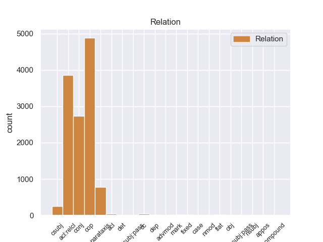
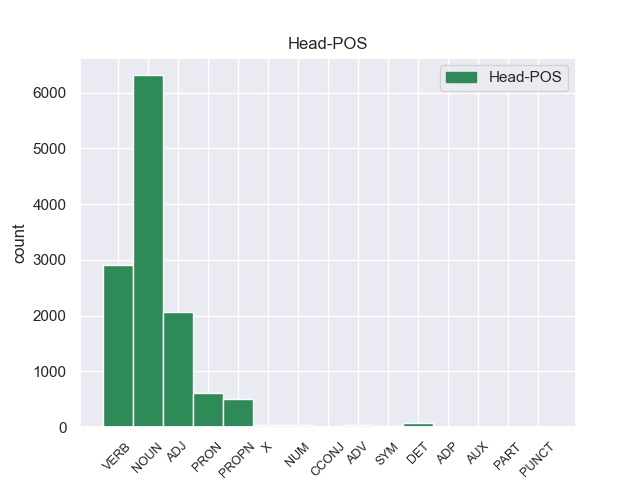
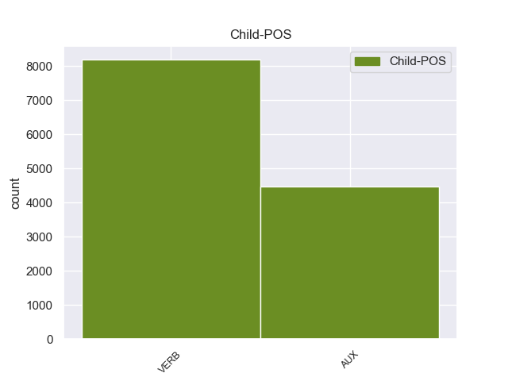

Distribution of features within this leaf



Morphosyntax Rules sorted by frequency.
- When the dependent token is the relative clause modifier(acl:relcl) of the head token, the Tense needs to be Past.
1 En _ _ _ _ 0 _ _ _
2 estos _ _ _ _ 0 _ _ _
3 trabajos _ _ _ _ 0 _ _ _
4 se _ _ _ _ 0 _ _ _
5 pusieron _ _ _ _ 0 _ _ _
6 a _ _ _ _ 0 _ _ _
7 el _ _ _ _ 0 _ _ _
8 descubierto _ _ _ _ 0 _ _ _
9 25 _ _ _ _ 0 _ _ _
10 vanos vano NOUN _ Gender=Masc|Number=Plur 0 _ _ _
11 correspondientes _ _ _ _ 0 _ _ _
12 a _ _ _ _ 0 _ _ _
13 ventanas _ _ _ _ 0 _ _ _
14 saeteras _ _ _ _ 0 _ _ _
15 que _ _ _ _ 0 _ _ _
16 habían _ _ _ _ 0 _ _ _
17 sido _ _ _ _ 0 _ _ _
18 tapiadas tapiado VERB _ Gender=Fem|Number=Plur|Tense=Past|VerbForm=Part 10 acl:relcl _ _
19 en _ _ _ _ 0 _ _ _
20 los _ _ _ _ 0 _ _ _
21 siglos _ _ _ _ 0 _ _ _
22 anteriores _ _ _ _ 0 _ _ _
23 . _ _ _ _ 0 _ _ _
1 Jazmin _ _ _ _ 0 _ _ _
2 es _ _ _ _ 0 _ _ _
3 todo _ _ _ _ 0 _ _ _
4 lo _ _ _ _ 0 _ _ _
5 contrario contrario NOUN _ Gender=Masc|Number=Sing 0 _ _ _
6 , _ _ _ _ 0 _ _ _
7 es _ _ _ _ 0 _ _ _
8 tímida _ _ _ _ 0 _ _ _
9 y _ _ _ _ 0 _ _ _
10 callada _ _ _ _ 0 _ _ _
11 , _ _ _ _ 0 _ _ _
12 pero _ _ _ _ 0 _ _ _
13 siempre _ _ _ _ 0 _ _ _
14 es _ _ _ _ 0 _ _ _
15 arrastrada arrastrar VERB _ Gender=Fem|Number=Sing|Tense=Past|VerbForm=Part 5 conj _ _
16 por _ _ _ _ 0 _ _ _
17 las _ _ _ _ 0 _ _ _
18 locuras _ _ _ _ 0 _ _ _
19 y _ _ _ _ 0 _ _ _
20 travesuras _ _ _ _ 0 _ _ _
21 que _ _ _ _ 0 _ _ _
22 inventa _ _ _ _ 0 _ _ _
23 Alma _ _ _ _ 0 _ _ _
24 . _ _ _ _ 0 _ _ _
1 Tebacas _ _ _ _ 0 _ _ _
2 fue ser AUX _ Mood=Ind|Number=Sing|Person=3|Tense=Past|VerbForm=Fin 4 cop _ _
3 un _ _ _ _ 0 _ _ _
4 pueblo pueblo NOUN _ Gender=Masc|Number=Sing 0 _ _ _
5 indígena _ _ _ _ 0 _ _ _
6 que _ _ _ _ 0 _ _ _
7 habitó _ _ _ _ 0 _ _ _
8 en _ _ _ _ 0 _ _ _
9 los _ _ _ _ 0 _ _ _
10 municipios _ _ _ _ 0 _ _ _
11 de _ _ _ _ 0 _ _ _
12 Culiacán _ _ _ _ 0 _ _ _
13 y _ _ _ _ 0 _ _ _
14 Badiraguato _ _ _ _ 0 _ _ _
15 hasta _ _ _ _ 0 _ _ _
16 colindar _ _ _ _ 0 _ _ _
17 con _ _ _ _ 0 _ _ _
18 el _ _ _ _ 0 _ _ _
19 grupo _ _ _ _ 0 _ _ _
20 cahita _ _ _ _ 0 _ _ _
21 de _ _ _ _ 0 _ _ _
22 los _ _ _ _ 0 _ _ _
23 sinaloas _ _ _ _ 0 _ _ _
24 . _ _ _ _ 0 _ _ _
1 El _ _ _ _ 0 _ _ _
2 mandatario _ _ _ _ 0 _ _ _
3 uruguayo _ _ _ _ 0 _ _ _
4 , _ _ _ _ 0 _ _ _
5 quien _ _ _ _ 0 _ _ _
6 llegó _ _ _ _ 0 _ _ _
7 el _ _ _ _ 0 _ _ _
8 domingo _ _ _ _ 0 _ _ _
9 a _ _ _ _ 0 _ _ _
10 Paraguay _ _ _ _ 0 _ _ _
11 , _ _ _ _ 0 _ _ _
12 inició iniciar VERB _ Mood=Ind|Number=Sing|Person=3|Tense=Past|VerbForm=Fin 0 _ _ _
13 este _ _ _ _ 0 _ _ _
14 lunes _ _ _ _ 0 _ _ _
15 sus _ _ _ _ 0 _ _ _
16 actividades _ _ _ _ 0 _ _ _
17 a _ _ _ _ 0 _ _ _
18 el _ _ _ _ 0 _ _ _
19 colocar _ _ _ _ 0 _ _ _
20 una _ _ _ _ 0 _ _ _
21 ofrenda _ _ _ _ 0 _ _ _
22 floral _ _ _ _ 0 _ _ _
23 en _ _ _ _ 0 _ _ _
24 el _ _ _ _ 0 _ _ _
25 Panteón _ _ _ _ 0 _ _ _
26 de _ _ _ _ 0 _ _ _
27 los _ _ _ _ 0 _ _ _
28 Héroes _ _ _ _ 0 _ _ _
29 , _ _ _ _ 0 _ _ _
30 tras _ _ _ _ 0 _ _ _
31 lo _ _ _ _ 0 _ _ _
32 cual _ _ _ _ 0 _ _ _
33 se _ _ _ _ 0 _ _ _
34 trasladó trasladar VERB _ Mood=Ind|Number=Sing|Person=3|Tense=Past|VerbForm=Fin 12 parataxis _ _
35 a _ _ _ _ 0 _ _ _
36 el _ _ _ _ 0 _ _ _
37 Palacio _ _ _ _ 0 _ _ _
38 de _ _ _ _ 0 _ _ _
39 Gobierno _ _ _ _ 0 _ _ _
40 donde _ _ _ _ 0 _ _ _
41 fue _ _ _ _ 0 _ _ _
42 condecorado _ _ _ _ 0 _ _ _
43 por _ _ _ _ 0 _ _ _
44 Lugo _ _ _ _ 0 _ _ _
45 . _ _ _ _ 0 _ _ _
1 Me _ _ _ _ 0 _ _ _
2 hicieron _ _ _ _ 0 _ _ _
3 las _ _ _ _ 0 _ _ _
4 cortinas _ _ _ _ 0 _ _ _
5 de _ _ _ _ 0 _ _ _
6 casa _ _ _ _ 0 _ _ _
7 y _ _ _ _ 0 _ _ _
8 unos _ _ _ _ 0 _ _ _
9 estores _ _ _ _ 0 _ _ _
10 , _ _ _ _ 0 _ _ _
11 y _ _ _ _ 0 _ _ _
12 la _ _ _ _ 0 _ _ _
13 verdad verdad NOUN _ Gender=Fem|Number=Sing 0 _ _ _
14 es _ _ _ _ 0 _ _ _
15 que _ _ _ _ 0 _ _ _
16 he _ _ _ _ 0 _ _ _
17 quedado quedar VERB _ Gender=Masc|Number=Sing|Tense=Past|VerbForm=Part 13 csubj _ _
18 muy _ _ _ _ 0 _ _ _
19 contenta _ _ _ _ 0 _ _ _
20 , _ _ _ _ 0 _ _ _
21 sobre _ _ _ _ 0 _ _ _
22 todo _ _ _ _ 0 _ _ _
23 comparando _ _ _ _ 0 _ _ _
24 con _ _ _ _ 0 _ _ _
25 los _ _ _ _ 0 _ _ _
26 presupuestos _ _ _ _ 0 _ _ _
27 que _ _ _ _ 0 _ _ _
28 me _ _ _ _ 0 _ _ _
29 habían _ _ _ _ 0 _ _ _
30 dado _ _ _ _ 0 _ _ _
31 antes _ _ _ _ 0 _ _ _
32 . _ _ _ _ 0 _ _ _
1 Mi _ _ _ _ 0 _ _ _
2 primer _ _ _ _ 0 _ _ _
3 plato _ _ _ _ 0 _ _ _
4 fueron _ _ _ _ 0 _ _ _
5 3 _ _ _ _ 0 _ _ _
6 o _ _ _ _ 0 _ _ _
7 4 _ _ _ _ 0 _ _ _
8 espárragos espárrago NOUN _ Gender=Masc|Number=Plur 0 _ _ _
9 sacados sacado VERB _ Gender=Masc|Number=Plur|Tense=Past|VerbForm=Part 8 acl _ _
10 tal _ _ _ _ 0 _ _ _
11 cual _ _ _ _ 0 _ _ _
12 de _ _ _ _ 0 _ _ _
13 la _ _ _ _ 0 _ _ _
14 lata _ _ _ _ 0 _ _ _
15 y _ _ _ _ 0 _ _ _
16 una _ _ _ _ 0 _ _ _
17 loncha _ _ _ _ 0 _ _ _
18 de _ _ _ _ 0 _ _ _
19 mortadela _ _ _ _ 0 _ _ _
20 de _ _ _ _ 0 _ _ _
21 adorno _ _ _ _ 0 _ _ _
22 y _ _ _ _ 0 _ _ _
23 el _ _ _ _ 0 _ _ _
24 de _ _ _ _ 0 _ _ _
25 mi _ _ _ _ 0 _ _ _
26 novio _ _ _ _ 0 _ _ _
27 fueron _ _ _ _ 0 _ _ _
28 entrantes _ _ _ _ 0 _ _ _
29 , _ _ _ _ 0 _ _ _
30 es _ _ _ _ 0 _ _ _
31 decir _ _ _ _ 0 _ _ _
32 una _ _ _ _ 0 _ _ _
33 loncha _ _ _ _ 0 _ _ _
34 de _ _ _ _ 0 _ _ _
35 embutido _ _ _ _ 0 _ _ _
36 de _ _ _ _ 0 _ _ _
37 mortadela _ _ _ _ 0 _ _ _
38 , _ _ _ _ 0 _ _ _
39 otra _ _ _ _ 0 _ _ _
40 de _ _ _ _ 0 _ _ _
41 salami _ _ _ _ 0 _ _ _
42 y _ _ _ _ 0 _ _ _
43 poco _ _ _ _ 0 _ _ _
44 más _ _ _ _ 0 _ _ _
45 . _ _ _ _ 0 _ _ _
1 Tras _ _ _ _ 0 _ _ _
2 la _ _ _ _ 0 _ _ _
3 muerte _ _ _ _ 0 _ _ _
4 de _ _ _ _ 0 _ _ _
5 éste _ _ _ _ 0 _ _ _
6 en _ _ _ _ 0 _ _ _
7 1536 _ _ _ _ 0 _ _ _
8 , _ _ _ _ 0 _ _ _
9 Enrique _ _ _ _ 0 _ _ _
10 le _ _ _ _ 0 _ _ _
11 sucedió _ _ _ _ 0 _ _ _
12 en _ _ _ _ 0 _ _ _
13 ambos _ _ _ _ 0 _ _ _
14 títulos _ _ _ _ 0 _ _ _
15 sin _ _ _ _ 0 _ _ _
16 llegar _ _ _ _ 0 _ _ _
17 a _ _ _ _ 0 _ _ _
18 gobernar _ _ _ _ 0 _ _ _
19 en _ _ _ _ 0 _ _ _
20 Bretaña _ _ _ _ 0 _ _ _
21 , _ _ _ _ 0 _ _ _
22 dado dado VERB _ Gender=Masc|Number=Sing|Tense=Past|VerbForm=Part 28 mark _ _
23 que _ _ _ _ 0 _ _ _
24 su _ _ _ _ 0 _ _ _
25 padre _ _ _ _ 0 _ _ _
26 era _ _ _ _ 0 _ _ _
27 el _ _ _ _ 0 _ _ _
28 usufructuario usufructuario NOUN _ Gender=Masc|Number=Sing 0 _ _ _
29 . _ _ _ _ 0 _ _ _
1 Hasta _ _ _ _ 0 _ _ _
2 1835 _ _ _ _ 0 _ _ _
3 , _ _ _ _ 0 _ _ _
4 la _ _ _ _ 0 _ _ _
5 villa _ _ _ _ 0 _ _ _
6 era _ _ _ _ 0 _ _ _
7 conocido _ _ _ _ 0 _ _ _
8 en _ _ _ _ 0 _ _ _
9 inglés _ _ _ _ 0 _ _ _
10 como _ _ _ _ 0 _ _ _
11 Pool _ _ _ _ 0 _ _ _
12 ( _ _ _ _ 0 _ _ _
13 Pantano _ _ _ _ 0 _ _ _
14 en _ _ _ _ 0 _ _ _
15 inglés _ _ _ _ 0 _ _ _
16 viejo _ _ _ _ 0 _ _ _
17 ) _ _ _ _ 0 _ _ _
18 , _ _ _ _ 0 _ _ _
19 pero _ _ _ _ 0 _ _ _
20 fue _ _ _ _ 0 _ _ _
21 cambiado _ _ _ _ 0 _ _ _
22 , _ _ _ _ 0 _ _ _
23 debido deber VERB _ Gender=Masc|Number=Sing|Tense=Past|VerbForm=Part 26 case _ _
24 a _ _ _ _ 0 _ _ _
25 la _ _ _ _ 0 _ _ _
26 villa villa NOUN _ Gender=Fem|Number=Sing 0 _ _ _
27 inglesa _ _ _ _ 0 _ _ _
28 de _ _ _ _ 0 _ _ _
29 Poole _ _ _ _ 0 _ _ _
30 en _ _ _ _ 0 _ _ _
31 el _ _ _ _ 0 _ _ _
32 condado _ _ _ _ 0 _ _ _
33 de _ _ _ _ 0 _ _ _
34 Dorset _ _ _ _ 0 _ _ _
35 . _ _ _ _ 0 _ _ _
1 Nacido nacido VERB _ Gender=Masc|Number=Sing|Tense=Past|VerbForm=Part 0 _ _ _
2 el _ _ _ _ 0 _ _ _
3 5 _ _ _ _ 0 _ _ _
4 de _ _ _ _ 0 _ _ _
5 enero _ _ _ _ 0 _ _ _
6 de _ _ _ _ 0 _ _ _
7 1893 _ _ _ _ 0 _ _ _
8 , _ _ _ _ 0 _ _ _
9 cuando _ _ _ _ 0 _ _ _
10 contaba _ _ _ _ 0 _ _ _
11 con _ _ _ _ 0 _ _ _
12 8 _ _ _ _ 0 _ _ _
13 años _ _ _ _ 0 _ _ _
14 falleció fallecer VERB _ Mood=Ind|Number=Sing|Person=3|Tense=Past|VerbForm=Fin 1 dep _ _
15 su _ _ _ _ 0 _ _ _
16 padre _ _ _ _ 0 _ _ _
17 , _ _ _ _ 0 _ _ _
18 Ramón _ _ _ _ 0 _ _ _
19 M _ _ _ _ 0 _ _ _
20 ª _ _ _ _ 0 _ _ _
21 Tenreiro _ _ _ _ 0 _ _ _
22 Fernández _ _ _ _ 0 _ _ _
23 , _ _ _ _ 0 _ _ _
24 quedando _ _ _ _ 0 _ _ _
25 bajo _ _ _ _ 0 _ _ _
26 la _ _ _ _ 0 _ _ _
27 tutela _ _ _ _ 0 _ _ _
28 de _ _ _ _ 0 _ _ _
29 su _ _ _ _ 0 _ _ _
30 tío _ _ _ _ 0 _ _ _
31 materno _ _ _ _ 0 _ _ _
32 , _ _ _ _ 0 _ _ _
33 Ricardo _ _ _ _ 0 _ _ _
34 Rodríguez _ _ _ _ 0 _ _ _
35 Pastor _ _ _ _ 0 _ _ _
36 . _ _ _ _ 0 _ _ _
1 Este _ _ _ _ 0 _ _ _
2 último _ _ _ _ 0 _ _ _
3 , _ _ _ _ 0 _ _ _
4 se _ _ _ _ 0 _ _ _
5 sorprende _ _ _ _ 0 _ _ _
6 de _ _ _ _ 0 _ _ _
7 el _ _ _ _ 0 _ _ _
8 acto _ _ _ _ 0 _ _ _
9 de _ _ _ _ 0 _ _ _
10 ir _ _ _ _ 0 _ _ _
11 a _ _ _ _ 0 _ _ _
12 su _ _ _ _ 0 _ _ _
13 encuentro _ _ _ _ 0 _ _ _
14 , _ _ _ _ 0 _ _ _
15 pero _ _ _ _ 0 _ _ _
16 de _ _ _ _ 0 _ _ _
17 todas _ _ _ _ 0 _ _ _
18 maneras _ _ _ _ 0 _ _ _
19 le _ _ _ _ 0 _ _ _
20 ayuda _ _ _ _ 0 _ _ _
21 a _ _ _ _ 0 _ _ _
22 introducir _ _ _ _ 0 _ _ _
23 se _ _ _ _ 0 _ _ _
24 en _ _ _ _ 0 _ _ _
25 las _ _ _ _ 0 _ _ _
26 instalaciones _ _ _ _ 0 _ _ _
27 de _ _ _ _ 0 _ _ _
28 la _ _ _ _ 0 _ _ _
29 isla _ _ _ _ 0 _ _ _
30 , _ _ _ _ 0 _ _ _
31 ya _ _ _ _ 0 _ _ _
32 que _ _ _ _ 0 _ _ _
33 Lockhart lockhart PROPN _ _ 0 _ _ _
34 , _ _ _ _ 0 _ _ _
35 desplegó desplegar VERB _ Mood=Ind|Number=Sing|Person=3|Tense=Past|VerbForm=Fin 33 flat _ _
36 a _ _ _ _ 0 _ _ _
37 todas _ _ _ _ 0 _ _ _
38 las _ _ _ _ 0 _ _ _
39 fuerzas _ _ _ _ 0 _ _ _
40 restantes _ _ _ _ 0 _ _ _
41 de _ _ _ _ 0 _ _ _
42 la _ _ _ _ 0 _ _ _
43 CELL _ _ _ _ 0 _ _ _
44 en _ _ _ _ 0 _ _ _
45 la _ _ _ _ 0 _ _ _
46 isla _ _ _ _ 0 _ _ _
47 , _ _ _ _ 0 _ _ _
48 y _ _ _ _ 0 _ _ _
49 está _ _ _ _ 0 _ _ _
50 dispuesto _ _ _ _ 0 _ _ _
51 a _ _ _ _ 0 _ _ _
52 acabar _ _ _ _ 0 _ _ _
53 con _ _ _ _ 0 _ _ _
54 Alcatraz _ _ _ _ 0 _ _ _
55 y _ _ _ _ 0 _ _ _
56 el _ _ _ _ 0 _ _ _
57 traje _ _ _ _ 0 _ _ _
58 . _ _ _ _ 0 _ _ _
1 El _ _ _ _ 0 _ _ _
2 4 _ _ _ _ 0 _ _ _
3 de _ _ _ _ 0 _ _ _
4 mayo _ _ _ _ 0 _ _ _
5 de _ _ _ _ 0 _ _ _
6 1982 _ _ _ _ 0 _ _ _
7 dos _ _ _ _ 0 _ _ _
8 de _ _ _ _ 0 _ _ _
9 estos _ _ _ _ 0 _ _ _
10 aviones _ _ _ _ 0 _ _ _
11 habían _ _ _ _ 0 _ _ _
12 destruido _ _ _ _ 0 _ _ _
13 a _ _ _ _ 0 _ _ _
14 el _ _ _ _ 0 _ _ _
15 destructor _ _ _ _ 0 _ _ _
16 británico _ _ _ _ 0 _ _ _
17 HMS _ _ _ _ 0 _ _ _
18 Sheffield _ _ _ _ 0 _ _ _
19 ( _ _ _ _ 0 _ _ _
20 D80 _ _ _ _ 0 _ _ _
21 ) _ _ _ _ 0 _ _ _
22 utilizando _ _ _ _ 0 _ _ _
23 dos _ _ _ _ 0 _ _ _
24 Exocet _ _ _ _ 0 _ _ _
25 en _ _ _ _ 0 _ _ _
26 el _ _ _ _ 0 _ _ _
27 ataque _ _ _ _ 0 _ _ _
28 , _ _ _ _ 0 _ _ _
29 permaneciendo _ _ _ _ 0 _ _ _
30 otros _ _ _ _ 0 _ _ _
31 tres _ _ _ _ 0 _ _ _
32 misiles _ _ _ _ 0 _ _ _
33 más _ _ _ _ 0 _ _ _
34 en _ _ _ _ 0 _ _ _
35 poder _ _ _ _ 0 _ _ _
36 de _ _ _ _ 0 _ _ _
37 la _ _ _ _ 0 _ _ _
38 Armada _ _ _ _ 0 _ _ _
39 Argentina _ _ _ _ 0 _ _ _
40 ya _ _ _ _ 0 _ _ _
41 que que CCONJ _ _ 0 _ _ _
42 Francia _ _ _ _ 0 _ _ _
43 había _ _ _ _ 0 _ _ _
44 sólo _ _ _ _ 0 _ _ _
45 entregado entregar VERB _ Gender=Masc|Number=Sing|Tense=Past|VerbForm=Part 41 fixed _ _
46 5 _ _ _ _ 0 _ _ _
47 antes _ _ _ _ 0 _ _ _
48 de _ _ _ _ 0 _ _ _
49 la _ _ _ _ 0 _ _ _
50 guerra _ _ _ _ 0 _ _ _
51 . _ _ _ _ 0 _ _ _
1 Ser _ _ _ _ 0 _ _ _
2 identificado identificado VERB _ Gender=Masc|Number=Sing|Tense=Past|VerbForm=Part 9 csubj:pass _ _
3 como _ _ _ _ 0 _ _ _
4 el _ _ _ _ 0 _ _ _
5 redactor _ _ _ _ 0 _ _ _
6 de _ _ _ _ 0 _ _ _
7 una _ _ _ _ 0 _ _ _
8 sátira _ _ _ _ 0 _ _ _
9 presentaba presentar VERB _ Mood=Ind|Number=Sing|Person=3|Tense=Imp|VerbForm=Fin 0 _ _ _
10 grandes _ _ _ _ 0 _ _ _
11 riesgos _ _ _ _ 0 _ _ _
12 : _ _ _ _ 0 _ _ _
13 por _ _ _ _ 0 _ _ _
14 un _ _ _ _ 0 _ _ _
15 lado _ _ _ _ 0 _ _ _
16 , _ _ _ _ 0 _ _ _
17 las _ _ _ _ 0 _ _ _
18 leyes _ _ _ _ 0 _ _ _
19 sobre _ _ _ _ 0 _ _ _
20 difamación _ _ _ _ 0 _ _ _
21 tenían _ _ _ _ 0 _ _ _
22 una _ _ _ _ 0 _ _ _
23 interpretación _ _ _ _ 0 _ _ _
24 muy _ _ _ _ 0 _ _ _
25 amplia _ _ _ _ 0 _ _ _
26 y _ _ _ _ 0 _ _ _
27 era _ _ _ _ 0 _ _ _
28 difícil _ _ _ _ 0 _ _ _
29 para _ _ _ _ 0 _ _ _
30 el _ _ _ _ 0 _ _ _
31 autor _ _ _ _ 0 _ _ _
32 evitar _ _ _ _ 0 _ _ _
33 las _ _ _ _ 0 _ _ _
34 actuaciones _ _ _ _ 0 _ _ _
35 judiciales _ _ _ _ 0 _ _ _
36 si _ _ _ _ 0 _ _ _
37 se _ _ _ _ 0 _ _ _
38 establecía _ _ _ _ 0 _ _ _
39 quien _ _ _ _ 0 _ _ _
40 era _ _ _ _ 0 _ _ _
41 el _ _ _ _ 0 _ _ _
42 autor _ _ _ _ 0 _ _ _
43 de _ _ _ _ 0 _ _ _
44 un _ _ _ _ 0 _ _ _
45 texto _ _ _ _ 0 _ _ _
46 que _ _ _ _ 0 _ _ _
47 parecía _ _ _ _ 0 _ _ _
48 criticar _ _ _ _ 0 _ _ _
49 a _ _ _ _ 0 _ _ _
50 un _ _ _ _ 0 _ _ _
51 miembro _ _ _ _ 0 _ _ _
52 de _ _ _ _ 0 _ _ _
53 la _ _ _ _ 0 _ _ _
54 nobleza _ _ _ _ 0 _ _ _
55 ; _ _ _ _ 0 _ _ _
1 El _ _ _ _ 0 _ _ _
2 mismo _ _ _ _ 0 _ _ _
3 año _ _ _ _ 0 _ _ _
4 resulta _ _ _ _ 0 _ _ _
5 ganador _ _ _ _ 0 _ _ _
6 de _ _ _ _ 0 _ _ _
7 el _ _ _ _ 0 _ _ _
8 Premio _ _ _ _ 0 _ _ _
9 Félix _ _ _ _ 0 _ _ _
10 Urabayen _ _ _ _ 0 _ _ _
11 por _ _ _ _ 0 _ _ _
12 su _ _ _ _ 0 _ _ _
13 novela novela NOUN _ Gender=Fem|Number=Sing 0 _ _ _
14 La _ _ _ _ 0 _ _ _
15 senda _ _ _ _ 0 _ _ _
16 de _ _ _ _ 0 _ _ _
17 los _ _ _ _ 0 _ _ _
18 elefantes _ _ _ _ 0 _ _ _
19 , _ _ _ _ 0 _ _ _
20 que _ _ _ _ 0 _ _ _
21 ya _ _ _ _ 0 _ _ _
22 había _ _ _ _ 0 _ _ _
23 sido _ _ _ _ 0 _ _ _
24 postulada postular VERB _ Gender=Fem|Number=Sing|Tense=Past|VerbForm=Part 13 advmod _ _
25 anteriormente _ _ _ _ 0 _ _ _
26 , _ _ _ _ 0 _ _ _
27 con _ _ _ _ 0 _ _ _
28 otro _ _ _ _ 0 _ _ _
29 nombre _ _ _ _ 0 _ _ _
30 , _ _ _ _ 0 _ _ _
31 a _ _ _ _ 0 _ _ _
32 otro _ _ _ _ 0 _ _ _
33 concurso _ _ _ _ 0 _ _ _
34 literario _ _ _ _ 0 _ _ _
35 . _ _ _ _ 0 _ _ _
1 Fue ser VERB _ Mood=Ind|Number=Sing|Person=3|Tense=Past|VerbForm=Fin 3 nsubj:pass _ _
2 nombrado _ _ _ _ 0 _ _ _
3 presidente presidente NOUN _ Gender=Masc|Number=Sing 0 _ _ _
4 de _ _ _ _ 0 _ _ _
5 el _ _ _ _ 0 _ _ _
6 Consejo _ _ _ _ 0 _ _ _
7 Municipal _ _ _ _ 0 _ _ _
8 de _ _ _ _ 0 _ _ _
9 Jojutla _ _ _ _ 0 _ _ _
10 . _ _ _ _ 0 _ _ _
1 Entonces _ _ _ _ 0 _ _ _
2 los _ _ _ _ 0 _ _ _
3 líderes _ _ _ _ 0 _ _ _
4 gibelinos _ _ _ _ 0 _ _ _
5 se _ _ _ _ 0 _ _ _
6 reunieron _ _ _ _ 0 _ _ _
7 en _ _ _ _ 0 _ _ _
8 Empoli _ _ _ _ 0 _ _ _
9 y _ _ _ _ 0 _ _ _
10 se _ _ _ _ 0 _ _ _
11 decidió _ _ _ _ 0 _ _ _
12 arrasar _ _ _ _ 0 _ _ _
13 Florencia _ _ _ _ 0 _ _ _
14 : _ _ _ _ 0 _ _ _
15 fue ser AUX _ Mood=Ind|Number=Sing|Person=3|Tense=Past|VerbForm=Fin 0 _ _ _
16 Farinata farinata VERB _ Gender=Fem|Number=Sing|Tense=Past|VerbForm=Part 15 nsubj _ _
17 quien _ _ _ _ 0 _ _ _
18 bochó _ _ _ _ 0 _ _ _
19 la _ _ _ _ 0 _ _ _
20 iniciativa _ _ _ _ 0 _ _ _
21 , _ _ _ _ 0 _ _ _
22 y _ _ _ _ 0 _ _ _
23 así _ _ _ _ 0 _ _ _
24 volvió _ _ _ _ 0 _ _ _
25 triunfante _ _ _ _ 0 _ _ _
26 a _ _ _ _ 0 _ _ _
27 la _ _ _ _ 0 _ _ _
28 ciudad _ _ _ _ 0 _ _ _
29 , _ _ _ _ 0 _ _ _
30 donde _ _ _ _ 0 _ _ _
31 murió _ _ _ _ 0 _ _ _
32 en _ _ _ _ 0 _ _ _
33 1264 _ _ _ _ 0 _ _ _
34 . _ _ _ _ 0 _ _ _
1 En _ _ _ _ 0 _ _ _
2 la _ _ _ _ 0 _ _ _
3 década _ _ _ _ 0 _ _ _
4 de _ _ _ _ 0 _ _ _
5 1990 _ _ _ _ 0 _ _ _
6 aparecen _ _ _ _ 0 _ _ _
7 en _ _ _ _ 0 _ _ _
8 el _ _ _ _ 0 _ _ _
9 programa programa NOUN _ Gender=Masc|Number=Sing 0 _ _ _
10 de _ _ _ _ 0 _ _ _
11 TVE _ _ _ _ 0 _ _ _
12 " _ _ _ _ 0 _ _ _
13 Qué _ _ _ _ 0 _ _ _
14 pasó pasar VERB _ Mood=Ind|Number=Sing|Person=3|Tense=Past|VerbForm=Fin 9 appos _ _
15 con _ _ _ _ 0 _ _ _
16 " _ _ _ _ 0 _ _ _
17 y _ _ _ _ 0 _ _ _
18 entre _ _ _ _ 0 _ _ _
19 1994 _ _ _ _ 0 _ _ _
20 y _ _ _ _ 0 _ _ _
21 1996 _ _ _ _ 0 _ _ _
22 tocan _ _ _ _ 0 _ _ _
23 anualmente _ _ _ _ 0 _ _ _
24 en _ _ _ _ 0 _ _ _
25 directo _ _ _ _ 0 _ _ _
26 en _ _ _ _ 0 _ _ _
27 las _ _ _ _ 0 _ _ _
28 fiestas _ _ _ _ 0 _ _ _
29 de _ _ _ _ 0 _ _ _
30 Navalcarnero _ _ _ _ 0 _ _ _
31 ( _ _ _ _ 0 _ _ _
32 Madrid _ _ _ _ 0 _ _ _
33 ) _ _ _ _ 0 _ _ _
34 . _ _ _ _ 0 _ _ _
non-conforming Examples:
1 Además _ _ _ _ 0 _ _ _
2 se _ _ _ _ 0 _ _ _
3 le _ _ _ _ 0 _ _ _
4 pediría pedir VERB _ Mood=Cnd|Number=Sing|Person=3|VerbForm=Fin 0 _ _ _
5 a _ _ _ _ 0 _ _ _
6 las _ _ _ _ 0 _ _ _
7 empresas _ _ _ _ 0 _ _ _
8 interesadas _ _ _ _ 0 _ _ _
9 en _ _ _ _ 0 _ _ _
10 prestar _ _ _ _ 0 _ _ _
11 el _ _ _ _ 0 _ _ _
12 servicio _ _ _ _ 0 _ _ _
13 que _ _ _ _ 0 _ _ _
14 se _ _ _ _ 0 _ _ _
15 hagan hacer VERB _ Mood=Sub|Number=Plur|Person=3|Tense=Pres|VerbForm=Fin 4 csubj _ _
16 cargo _ _ _ _ 0 _ _ _
17 de _ _ _ _ 0 _ _ _
18 la _ _ _ _ 0 _ _ _
19 señalización _ _ _ _ 0 _ _ _
20 y _ _ _ _ 0 _ _ _
21 la _ _ _ _ 0 _ _ _
22 cartelería _ _ _ _ 0 _ _ _
23 que _ _ _ _ 0 _ _ _
24 contiene _ _ _ _ 0 _ _ _
25 información _ _ _ _ 0 _ _ _
26 para _ _ _ _ 0 _ _ _
27 los _ _ _ _ 0 _ _ _
28 usuarios _ _ _ _ 0 _ _ _
29 . _ _ _ _ 0 _ _ _
1 Además _ _ _ _ 0 _ _ _
2 se _ _ _ _ 0 _ _ _
3 le _ _ _ _ 0 _ _ _
4 pediría _ _ _ _ 0 _ _ _
5 a _ _ _ _ 0 _ _ _
6 las _ _ _ _ 0 _ _ _
7 empresas _ _ _ _ 0 _ _ _
8 interesadas _ _ _ _ 0 _ _ _
9 en _ _ _ _ 0 _ _ _
10 prestar _ _ _ _ 0 _ _ _
11 el _ _ _ _ 0 _ _ _
12 servicio _ _ _ _ 0 _ _ _
13 que _ _ _ _ 0 _ _ _
14 se _ _ _ _ 0 _ _ _
15 hagan _ _ _ _ 0 _ _ _
16 cargo _ _ _ _ 0 _ _ _
17 de _ _ _ _ 0 _ _ _
18 la _ _ _ _ 0 _ _ _
19 señalización señalización NOUN _ Gender=Fem|Number=Sing 0 _ _ _
20 y _ _ _ _ 0 _ _ _
21 la _ _ _ _ 0 _ _ _
22 cartelería _ _ _ _ 0 _ _ _
23 que _ _ _ _ 0 _ _ _
24 contiene contener VERB _ Mood=Ind|Number=Sing|Person=3|Tense=Pres|VerbForm=Fin 19 acl:relcl _ _
25 información _ _ _ _ 0 _ _ _
26 para _ _ _ _ 0 _ _ _
27 los _ _ _ _ 0 _ _ _
28 usuarios _ _ _ _ 0 _ _ _
29 . _ _ _ _ 0 _ _ _
1 Los _ _ _ _ 0 _ _ _
2 pacientes _ _ _ _ 0 _ _ _
3 con _ _ _ _ 0 _ _ _
4 diabetes _ _ _ _ 0 _ _ _
5 son ser AUX _ Mood=Ind|Number=Plur|Person=3|Tense=Pres|VerbForm=Fin 9 cop _ _
6 cuatro _ _ _ _ 0 _ _ _
7 veces _ _ _ _ 0 _ _ _
8 más _ _ _ _ 0 _ _ _
9 propensos propenso ADJ _ Gender=Masc|Number=Plur 0 _ _ _
10 a _ _ _ _ 0 _ _ _
11 desarrollar _ _ _ _ 0 _ _ _
12 enfermedad _ _ _ _ 0 _ _ _
13 cardíacas _ _ _ _ 0 _ _ _
14 que _ _ _ _ 0 _ _ _
15 aquellos _ _ _ _ 0 _ _ _
16 que _ _ _ _ 0 _ _ _
17 no _ _ _ _ 0 _ _ _
18 tienen _ _ _ _ 0 _ _ _
19 diabetes _ _ _ _ 0 _ _ _
20 . _ _ _ _ 0 _ _ _
1 Los _ _ _ _ 0 _ _ _
2 pacientes _ _ _ _ 0 _ _ _
3 con _ _ _ _ 0 _ _ _
4 diabetes _ _ _ _ 0 _ _ _
5 son _ _ _ _ 0 _ _ _
6 cuatro _ _ _ _ 0 _ _ _
7 veces _ _ _ _ 0 _ _ _
8 más _ _ _ _ 0 _ _ _
9 propensos _ _ _ _ 0 _ _ _
10 a _ _ _ _ 0 _ _ _
11 desarrollar _ _ _ _ 0 _ _ _
12 enfermedad _ _ _ _ 0 _ _ _
13 cardíacas _ _ _ _ 0 _ _ _
14 que _ _ _ _ 0 _ _ _
15 aquellos aquel PRON _ Gender=Masc|Number=Plur|PronType=Dem 0 _ _ _
16 que _ _ _ _ 0 _ _ _
17 no _ _ _ _ 0 _ _ _
18 tienen tener VERB _ Mood=Ind|Number=Plur|Person=3|Tense=Pres|VerbForm=Fin 15 acl:relcl _ _
19 diabetes _ _ _ _ 0 _ _ _
20 . _ _ _ _ 0 _ _ _
1 Es ser AUX _ Mood=Ind|Number=Sing|Person=3|Tense=Pres|VerbForm=Fin 3 cop _ _
2 un _ _ _ _ 0 _ _ _
3 bar bar NOUN _ Gender=Masc|Number=Sing 0 _ _ _
4 disfrazado _ _ _ _ 0 _ _ _
5 de _ _ _ _ 0 _ _ _
6 restaurante _ _ _ _ 0 _ _ _
7 la _ _ _ _ 0 _ _ _
8 comida _ _ _ _ 0 _ _ _
9 esta _ _ _ _ 0 _ _ _
10 demasiado _ _ _ _ 0 _ _ _
11 salada _ _ _ _ 0 _ _ _
12 . _ _ _ _ 0 _ _ _